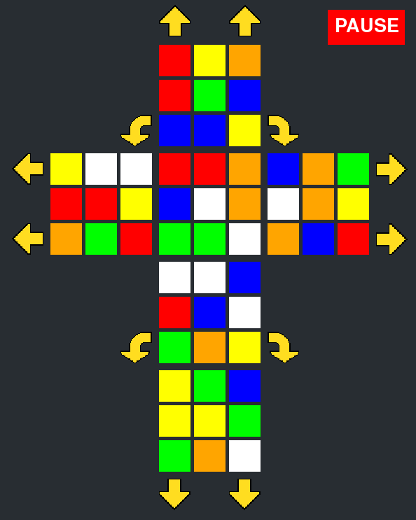

Rubik's Spatial
This rubik's cube not only requires the ability to solve the cube, but also the spatial awareness to understand how the cube moves once unfolded. Rubik's spatial uses the pygame and numpy libraries in python the create this interesting but challaenging twist on the classic Rubik's cube.
